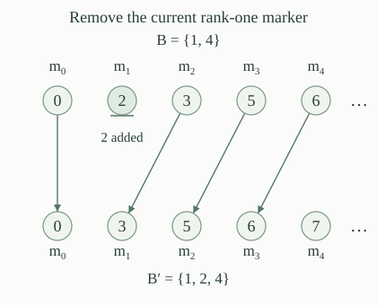

A set \(D\subseteq\mathbb N\) is cofinite if \(\mathbb N\setminus D\) is finite, and coinfinite if that complement is infinite. With the fixed ordinary program numbering and \(W_e=\operatorname{dom}(\varphi_e)\), define the cofinite-domain index set and the coinfinite-domain index set by
Every subset of \(\mathbb N\) has either a finite or an infinite complement. Thus \(\mathrm{COINF}=\mathbb N\setminus\mathrm{COF}\). This complement is taken among indices; it does not assert that the complement of each c.e. domain is c.e.
Using the uniform finite stages, for every \(e\),
Consequently \(\mathrm{COF}\in\Sigma_3\) and \(\mathrm{COINF}\in\Pi_3\).
A finite complement has a bound \(a\): every omitted number is smaller than \(a\). For \(n\ge a\), domain membership has a finite witnessing stage; for \(n<a\), any stage suffices. Conversely, the displayed condition puts every \(n\ge a\) in the domain, so its complement is contained in the finite set \(\{0,\ldots,a-1\}\). The bound \(a=0\) includes the whole domain.
The matrix is primitive recursive. The computable-matrix hierarchy form has prefix \(\exists\forall\exists\), giving the first bound; complement duality gives the second.
Compare programs whose domains are \(\varnothing\), the even numbers, and \(\mathbb N\). Which domain is cofinite? Which are coinfinite? Which are infinite?
Only \(\mathbb N\) is cofinite; its complement is empty. The empty domain is coinfinite because its complement is all of \(\mathbb N\). The even domain is also coinfinite, because it omits every odd number. The even domain and \(\mathbb N\) are infinite; the empty domain is finite. All three occur as program domains, using an always-divergent program, the parity program, and a constant total program.
In particular, infinitude and cofinitude ask different questions. The second-level classification of infinitude does not supply the third-level lower bound for cofinitude.
For every \(A\in\Sigma_3\), there is one primitive-recursive map \(g:\mathbb N^2\to\mathbb N\) such that
Write \(x\in A\) as \(\exists y\,\forall u\,\exists v\,R(x,y,u,v)\), with \(R\) computable. On a paired parameter \(w=\langle x,y\rangle\), the relation \(\forall u\,\exists v\,R(x,y,u,v)\) defines one \(\Pi_2\) set of codes \(w\). Apply infinitude completeness once to this joint set. It supplies a primitive-recursive reduction \(g_0(w)\).
Put \(g(x,y)=g_0(\langle x,y\rangle)\). For every pair, the corresponding row \(W_{g(x,y)}\) is infinite exactly when the displayed universal-existential tail holds. Taking \(\exists y\) proves the assertion. The one reduction \(g_0\) is chosen before \(x,y\) vary; independently chosen reductions for separate rows would not establish this uniformity.
For a finite set \(B\subseteq\mathbb N\), its rank-\(n\) complement marker \(m_n(B)\) is the \(n\)-th smallest number outside \(B\), counting from rank zero. Equivalently, it is the unique \(k\notin B\) with exactly \(n\) numbers below \(k\) outside \(B\).
The markers exist at every rank, satisfy \(m_0(B)<m_1(B)<\cdots\), and obey
Indeed, among the \(n+|B|+1\) numbers from zero through \(n+|B|\), at most \(|B|\) belong to \(B\), leaving at least \(n+1\) omissions. Scan this bounded interval and count omissions until reaching rank \(n\). With coded finite lists representing finite sets without repetitions, this is a primitive-recursive numerical operation. No infinite complement is supplied as input.
For finite \(B\), let \(B'=B\cup\{m_y(B)\}\). Then
Thus no marker decreases, the rank-\(y\) marker strictly increases, and every rank below \(y\) stays fixed.
The missing numbers before the insertion are precisely the increasing list \(m_0(B),m_1(B),\ldots\). The insertion removes its entry of rank \(y\) and no other entry. The first \(y\) positions are unchanged, and every later position is filled by its old successor. This proves the formula, including \(y=0\), when every rank shifts. Strict ordering of the old list gives all the asserted inequalities.

Start with \(B=\{1,4\}\). Two successive events both request removal of the current rank-one marker. What is the resulting finite set? Would removing the original marker twice have the same effect?
The initial omissions begin \(0,2,3,5,\ldots\), so the first event inserts \(2\). They then begin \(0,3,5,6,\ldots\), so the second inserts \(3\). The resulting set is \(\{1,2,3,4\}\). Inserting the original value \(2\) twice would instead leave \(\{1,2,4\}\). Sets ignore repeated insertions, so that second instruction would not move the marker again. Each genuine event must use the current finite set.
A cumulative event schedule consists of finite sets \(E_{x,s}\subseteq\{c:c<s\}\), with a primitive-recursive membership test jointly in \(x,s,c\), such that \(E_{x,s}\subseteq E_{x,s+1}\). A fixed primitive-recursive event label \(\ell(c)\) specifies which marker an event requests. The fresh events at the step from \(s\) to \(s+1\) are \(F_{x,s}=E_{x,s+1}\setminus E_{x,s}\).
The marker construction for this schedule starts with \(B_{x,0}=\varnothing\). To form the next stage, begin with \(B_{x,s,0}=B_{x,s}\), and for \(c=0,\ldots,s\) put
Set \(B_{x,s+1}=B_{x,s,s+1}\), and call \(B_x=\bigcup_s B_{x,s}\) the output set. This is an ascending-code scan of the fresh batch, with markers recomputed after every insertion. The intermediate index \(c\) counts inspected codes, including codes that are not fresh. Since every fresh code is at most \(s\), none is skipped.
For a cumulative event schedule, the coded finite sets \(B_{x,s}\) are primitive recursive jointly in \(x,s\), and \(B_{x,s}\subseteq B_{x,s+1}\). Every event \(c\in\bigcup_s E_{x,s}\) is processed exactly once. For every rank \(n\), \(m_n(B_{x,s})\) is nondecreasing with \(s\).
At a supplied stage, the scan has the finite bound \(s+1\). The fresh-event test terminates; computing a requested marker uses the bounded scan of ; inserting its new number into the coded finite set is a finite list operation. Primitive recursion on stages, with this finite inner recursion, therefore computes the stage codes. The invariant through the inner scan is that the state is a finite extension of its preceding state, with exactly the earlier fresh-code insertions performed. It gives both finiteness and the stage inclusion.
Since \(E_{x,0}=\varnothing\), every event in the union has a first successful stage. It belongs to precisely the fresh difference preceding that stage. Monotonicity excludes it from every later fresh difference, so it acts once. Finally, makes every individual insertion nondecreasing at every marker rank. Induction through each batch and then through stages proves the marker monotonicity.
Fix \(x,n\). If only finitely many events \(c\in\bigcup_s E_{x,s}\) have \(\ell(c)\le n\), there is a stage \(S\) such that every marker of rank \(i\le n\) remains equal to \(m_i(B_{x,S})\) at all later stages. Each of these \(n+1\) distinct values lies outside the final output \(B_x\). Consequently, if this finiteness condition holds at every bound \(n\), then \(B_x\) is coinfinite.
Each of the finitely many relevant events has a processing stage by . Choose \(S\) after all of them. Every insertion thereafter has label greater than \(n\), and says that it preserves all the first \(n+1\) markers. Induction through subsequent batches proves their permanence.
Each permanent marker is absent from every stage at or after \(S\), by its definition as an omission. It is absent from earlier stages too, since stages only increase. Thus it is absent from their union. The strictly increasing marker prefix supplies \(n+1\) distinct final omissions. If the final complement were finite of size \(r\), the prefix through rank \(r\) would give \(r+1\) omissions, a contradiction. The existence of \(S\) does not provide a computable settling bound.
Fix \(x,y\). If infinitely many events in \(\bigcup_s E_{x,s}\) have label \(y\), the sequence \(m_y(B_{x,s})\) is unbounded, and \(\mathbb N\setminus B_x\) has at most \(y\) members. In particular \(B_x\) is cofinite.
Every such event acts once, each batch is finite, and removing the current rank-\(y\) marker strictly raises that marker. Other insertions never decrease it. If the stage markers were bounded by \(N\), their nondecreasing natural-number values could undergo at most \(N\) strict increases. Infinitely many label-\(y\) events contradict this. Thus the marker is unbounded.
If \(y+1\) distinct numbers remained outside \(B_x\), let \(M\) be their maximum. They would be absent at every stage. At each stage there would then be at least \(y+1\) omissions at most \(M\), implying \(m_y(B_{x,s})\le M\), a contradiction. Hence at most \(y\) final omissions survive. This proof permits arbitrary additional events at other labels; they cannot undo an insertion or decrease a marker.
Fix the joint row map \(g\) of . For a paired code \(c=\langle y,z\rangle\), use the row-discovery schedule and row label
This is a cumulative event schedule: its membership test is primitive recursive, because \(g\), unpairing and stage membership are; increasing stages retain both the code bound and the discovered membership. An event \(\langle y,z\rangle\) eventually appears exactly when \(z\in W_{g(x,y)}\). For the forward implication use stage soundness. For the reverse, enlarge a witnessing stage until it also exceeds the event code.
Thus the events with label \(y\) correspond bijectively to the members of row \(W_{g(x,y)}\). A computation discovered before its event code is first inspected is still caught at a later stage. Reobserving it at more stages creates no extra event, because the construction acts only on fresh differences.
For the marker construction with the row-discovery schedule, every \(x\) satisfies
If all rows are finite, \(B_x\) is coinfinite.
If row \(y\) is infinite, the corresponding infinitely many distinct events have label \(y\). makes \(B_x\) cofinite, with at most \(y\) final omissions.
If every row is finite, fix a rank bound \(n\). The finitely many rows with labels \(0,\ldots,n\) contain only finitely many members in total, so only finitely many events have labels at most \(n\). gives coinfinitude. This excludes cofinitude and proves the reverse implication as well.
For the fixed schedule and row map, define the marker recognition program on paired input \(\langle x,z\rangle\) by inspecting stages \(s=0,1,2,\ldots\), returning zero as soon as \(z\in B_{x,s}\), and remaining undefined if no such stage exists. The stage test is primitive recursive by , so sequential search gives a jointly partial-recursive program.
Choose one program index \(p_g\) for this paired-input program, before \(x,z\) vary. The parameter theorem supplies the specified marker index map
In particular \(h_g\) is primitive recursive, and \(W_{h_g(x)}=B_x\) for every \(x\). The code map does not wait to learn which rows are infinite. All infinite behavior occurs only when the resulting program runs.
The index set \(\mathrm{COF}\) is \(\Sigma_3\)-complete under ordinary computable many-one reductions. For every \(A\in\Sigma_3\), such a reduction can be chosen primitive recursive.
The upper bound is . Given an arbitrary \(A\in\Sigma_3\), choose the one joint row map \(g\) of and then the marker index map \(h_g\). Its construction and give, for every \(x\),
The actual map \(h_g\) is primitive recursive. It is therefore a total computable many-one reduction, proving the lower bound and the stated strengthening.
Keeping the same marker engine and adding separately tagged halting discoveries gives a stronger two-outcome construction: positive inputs still give cofinite domains, while negative inputs give domains of the halting degree. This also classifies the indices of computable enumerable domains.
The index set \(\mathrm{COINF}\) is \(\Pi_3\)-complete. Every \(A\in\Pi_3\) has a primitive-recursive many-one reduction to it.
Its upper bound is . The complement of \(A\) is \(\Sigma_3\), so supplies a primitive-recursive \(f\) such that \(x\notin A\) exactly when \(f(x)\in\mathrm{COF}\). Negating both sides gives \(x\in A\) exactly when \(f(x)\in\mathrm{COINF}\). The same numerical map proves hardness for the complementary problem.
Use the cumulative schedule \(E_{x,s}=\{0,\ldots,s-1\}\), independent of \(x\), and labels \(\ell(c)=c\). Determine \(B_{x,s}\) and its union. Does an infinite total number of events force cofinitude?
Exactly event \(s\) is fresh at the step to stage \(s+1\). Inductively, \(B_{x,s}=\{2j:j<s\}\). The assertion holds for the empty stage. If it holds at \(s\), the omissions below \(2s\) are the \(s\) odd numbers \(1,3,\ldots,2s-1\); the next omission is \(2s\). Hence \(m_s(B_{x,s})=2s\), and event \(s\) produces precisely the next asserted stage.
The union is the set of even numbers, whose complement is infinite. There are infinitely many events, but each fixed label occurs once. This satisfies the bounded-label hypothesis of , not the repeated-fixed-label hypothesis of .